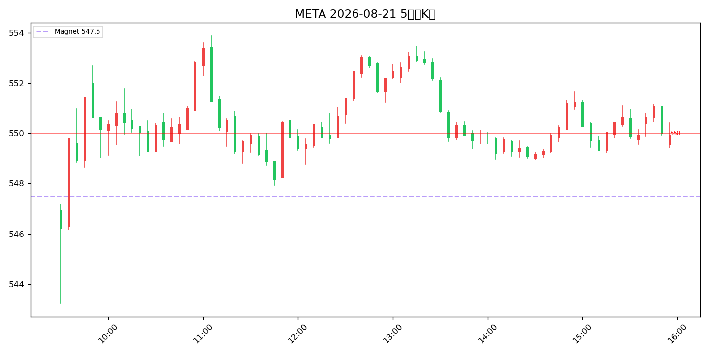

META
META 2026-08-21 周五
549.91 +0.55%
开 546.89 · 高 553.87 · 低 543.23
早盘分析
盘前预测·情况未发生｜发布时间 2026-08-21 07:16 MDT｜#junkman-analysis｜作者 junk_man
META:当前为正负 GEX 混合的方向选择结构，局部正 GEX 绝对占比约 47.1%。
当前价格关系：548.36 处在 Flip 548.4 的区域内、磁吸位 547.5 的上方。
关键位剧本：如果不能守住 540，Gamma 可能继续推着价格跌到 537.5。
Flip 反转剧本：如果在 Flip 548.4 附近完成反转，并重新站稳 548.4，价格就会去试探 550。
5 分钟 K 线
K 线：Yahoo Finance
夜航社 heatmap 历史仅保留最近3个交易日，本日无 heatmap 数据；YHS flow 历史从 2026-10-02 起，本日无 flow 数据。

分析总结
开盘546.89，最高553.87，最低543.23，收549.91（+0.55%）。日内振幅10.64点。